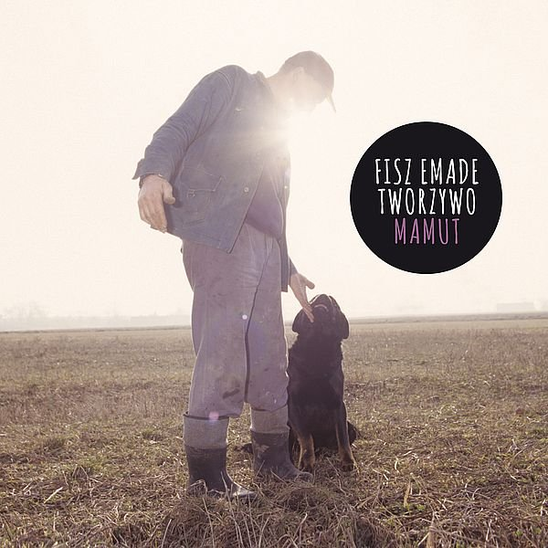
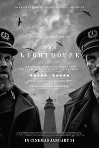

David Bowie
David Bowie, właśc. David Robert Jones (ur. 8 stycznia 1947 w Londynie, zm. 10 stycznia 2016
w Nowym Jorku) – brytyjski wokalista, kompozytor, autor tekstów, multiinstrumentalista,
producent muzyczny, aranżer, a także aktor, aktywny w przemyśle muzycznym od 1962. Był
również malarzem i kolekcjonerem sztuki.
Hunky Dory

Fisz Emade
Tworzywo Sztuczne (Fisz Emade jako Tworzywo Sztuczne, Fisz Emade Tworzywo) – polska
grupa wykonująca szeroko pojętą muzykę hip-hopową, m.in. z wpływami takich gatunków jak jazz,
downtempo, czy funk. Powstała w 2002 roku w Warszawie z inicjatywy braci: producenta
muzycznego i instrumentalisty Piotra „Emade” Waglewskiego oraz rapera i wokalisty Bartosza
„Fisza” Waglewskiego.
Mamut
The Lighthouse(reż. Robert Eggers)
Lost in Translation(reż. Sofia Coppola)

Wilk Stepowy - Hermann Hesse
Diuna - Frank Herbert